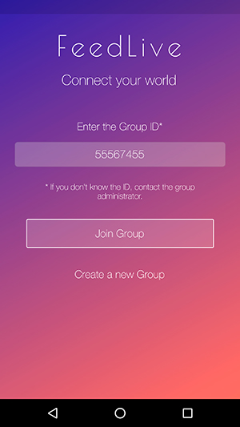

Introduction
Online documentation for FeedLive version 0.6
FeedLive is a service that parents can use to enforce family communication and child protection.
Version Notes
The currently available version is 0.6. That version includes the next features.
- Only available for Android devices.
- Create group (Group Administrator).
- Login into group by just entering the related group id (Group Member).
- Track last registered location for all group devices.
Upcoming Features
Some new features have already been scheduled for the next app versions.
Version 0.7
- Group Member approval process by Admin.
- Show last locations (not only last registered location).
- “Do not share” location option for Group Aministrators (parents).
Version 0.8
- Chating.
Version 0.9
- iOS (iPhone) version.
How it works
Installing
To use FeedLive, all the family members will need to install the mobile application. A parent will then be able to create a group that other members will join to share location and communicate.
Create a group
We recommend that you use a Group Id that your
family can easely recognize and remember.
Your Phone Number is a good candidate.
To create your family’s group, just tap on the “Create a new group” option you will find at the initial screen. Set your Group Id and press the “Create New Group” button.

Join a group
To join a group (e.g. from your child’s mobile), just enter the group id.

Tap “Join Group” and device will automatically join the group and ask you to set a username (e.g. ‘Jonh’).

Share location
Don't expect to get every second device location,
as FeedLive will try to get 24x7 device
location history without draining the battery.
By joining a group, a device will automatically start to share his location at regular intervals.
To get a device location details (position datetime and accuracy) you can simply tap on the location icon. Also note that the location dot color indicates if location is up-to-date:
Not getting an up-to-date position means
device is not sending GPS location.
Location registered in the last 30 minutes maximum.

Location is older than 30 minutes.
Location is older than 5 hours.
Get Support
If you have any question/request/issue/etc, please just write a new Issue here.
—— The End.